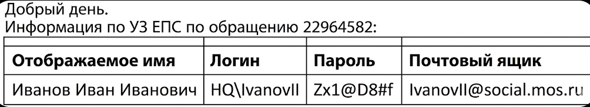
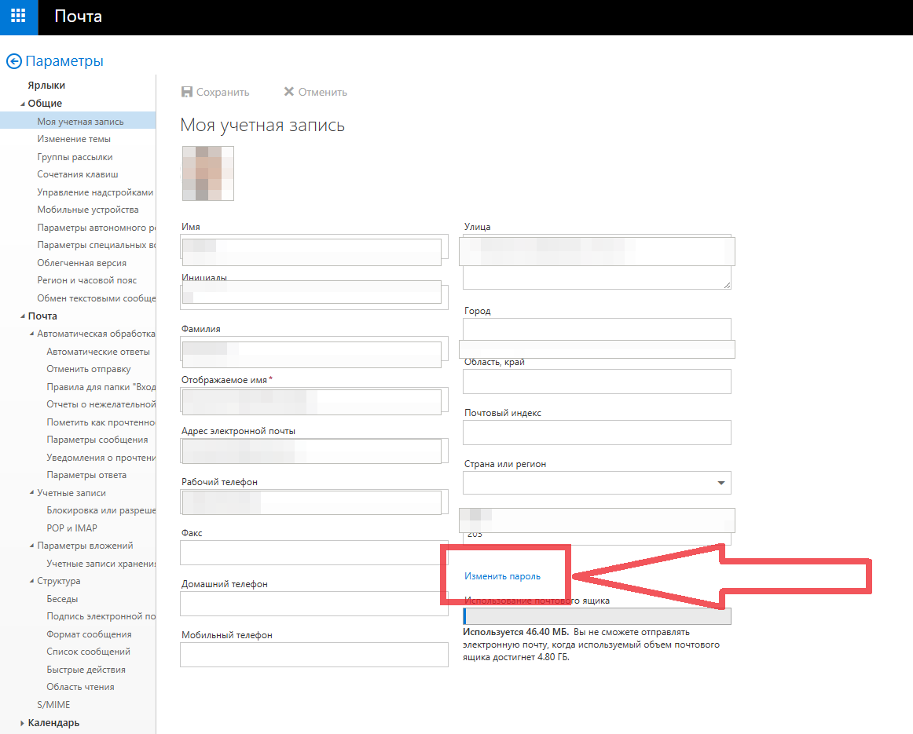

Памятка сотрудникам по работе с ИТ структурой ЕЦП
Инструкции, на которые ссылается памятка, опубликованы и на этом портале: под каждым разделом — переход на страницу с пошаговой инструкцией и, если она есть, архив с готовым ярлыком для рабочего стола. Скачивать ярлыки с сетевого диска в этом случае не нужно.
1. Получение учетной записи (УЗ) для работы на персональном компьютере ЕЦП.
Отдел кадров заполняет данные на оформление УЗ новому сотруднику. Ответственное лицо ЕЦП (Гришуткин Сергей, Абрамов Валентин) передают полученные данные в ДИТ и, примерно в течение суток, получают на почту УЗ нового сотрудника, данные которой передают обратно в кадры. После чего она должна оказаться у Вас. Пример:

Пароль, который указан при первом получении УЗ, является одноразовым. При входе в УЗ на компьютере вам будет принудительно предложено сменить его на свой. Пароль, согласно политикам ДИТ, должен быть не меньше 12 символов, содержать цифры, символы и заглавные буквы. Логин на компьютерах в ЕЦП набираем без домена HQ. Ваш пароль будет действовать 90 дней, после чего вам на почту (и при входе в компьютер) начнут приходить сообщения о необходимости смены пароля. Если пароль не сменить за 10 дней после первого сообщения, УЗ будет заблокирована и ее восстановление можно будет выполнить через ответственное лицо ЕЦП.
Пароль от УЗ можно сменить в любое время на компьютере в ЕЦП (нажать Ctrl+Alt+Del и выбрать «Изменить пароль»). Также его можно изменить в любом месте на почтовом сайте https://owa.mos.ru/ в параметрах УЗ в профиле

2. Сетевые ресурсы ЕЦП
Ваша учетная запись сразу предоставляет доступ к различным сетевым ресурсам ЕЦП:
1 – Сетевой диск
На рабочем столе компьютера должен быть ярлык «Сетевой диск». Каждому сотруднику сразу выдается к нему доступ и в папку «Общая» на нем. В эту папку имеют доступ все сотрудники на запись и чтение файлов. Доступ в дополнительные папки на сетевом диске согласуется с аналитическим отделом.
На порталеКак подключить сетевой дискСкачать ярлык «Сетевой диск» (.zip)
2 – Сетевые принтеры
Каждый сотрудник получает возможность печати на любом сетевом принтере ЕЦП. Для подключения используется ярлык «Добавление принтера». Вводим 4х-значный номер принтера на наклейке и нажимаем «подключить (инструкция в картинках есть на сетевом диске в папке "\Общая папка\Инструкции", если ярлыка нет на рабочем столе, его можно скопировать из папки "\Общая папка\ярлыки")
На порталеПодключение сетевого принтераСкачать ярлык «Добавление принтера» (.zip)
3 – Электронная почта
Доступ к почте осуществляется по единой выданной УЗ. На компьютере ЕЦП можно воспользоваться установленным почтовым клиентом. Outlook для windows – выбираем сервер Exchange и все пункты «далее». Thunderbird для Мостех ОС – принцип тот же.
Также доступ можно получить через почтовый сайт https://owa.mos.ru/ - это можно сделать как с рабочего АРМ, так и с любого устройства на территории РФ.
Подключение почты на мобильных устройствах iOS и Android так же возможно – инструкции в папке на сетевом диске "\Общая папка\Инструкции\почта MOS"
На порталеПочта MOS на телефоне: Android и iOSСкачать ярлык «MOS почта» (.zip)
4 – Сеть Wi-Fi
На территории ЕЦП есть две Wi-Fi сети DIT-Corp и DIT-PUBLIC. К сети DIT-PUBLIC может подключиться любой человек на территории, пройдя авторизацию по номеру телефона. К сети DIT-Corp могут подключиться сотрудники ЕЦП по выданной учетной записи (логин\пароль). В корпоративной сети DIT-Corp так же доступны сетевые ресурсы ЕЦП. Инструкция по подключению устройств к Wi-Fi лежит так же на сети "\Общая папка\Инструкции\Инструкция по настройке корпоративной сети wi-fi на телефоне.pdf"
На порталеWi-Fi DIT-Corp и DIT-PUBLIC: iOS, Android, Windows, macOS
5 – Облачное хранилище DIT Cloud
У каждого сотрудника есть доступ к облачному хранилищу в 2 гигабайта. Там можно хранить и обмениваться файлами не только с рабочих компьютеров в ЕЦП, но и пересылать ссылки доступа внешним контрагентам. На рабочем столе ярлык «Облако DIT» (если нет, копируем из папки "\Общая папка\ярлыки") или по адресу https://mostech-cloud.mos.ru/
Инструкции по работе портала можно найти в разделе «Помощь» или в сетевой папке "Общая папка\Инструкции\Инструкция dCloud.pdf".
На порталеОблако dCloud: видеообзор и разделыСкачать ярлык «Облако DIT» (.zip)
6 – Техническая поддержка DIT
Компьютеры, печатная техника, телефония и сетевое оборудование в ЕЦП предоставлено нам Департаментом Информационных Технологий (ДИТ, DIT). При поломках и неисправностях с предоставленной техникой просьба обращаться через портал технической поддержки, оформляя заявки. У нас на локации есть дежурный инженер, который оперативно Вам поможет. На рабочем столе ярлык «техподдержка ДИТ» (или скопировать с сетевого диска "\Общая папка\ярлыки"). Или по адресу https://moscow.itsm.mos.ru/
Инструкция по работе с порталом есть в видеофайле на сетевом диске "\Общая папка\Инструкции"
Т.к. у нас на локации есть инженер, проще всего оформлять заявки по пути "ДИТ. Техническая поддержка -> Рабочее место -> Компьютер не работает или работает некорректно".
На порталеТехподдержка ДИТПодача заявки по шагамСкачать ярлык «техподдержка ДИТ» (.zip)
7 – ТДМ мессенджер
На каждого сотрудника ЕЦП оформляется доступ к корпоративному мессенджеру ТДМ, через подачу заявки в ДТСЗН по заявленному в анкете мобильному номеру. Можно пользоваться прям со страницы портала https://web.tdm.mos.ru/ . Также можно скачать приложение на телефон https://tdm.mos.ru/ . При возникновении проблем с доступом к мессенджеру, необходимо написать в его поддержку tdm-helpdesk@mos.ru (или запасная общая support_mes@mos.ru).
8 – Магазин приложений ДИТ
Установка дополнительного программного обеспечения на компьютеры ДИТ, которое требует изменений в системе (запрашивает логин\пароль для установки), производится по согласованию заявкой в ДИТ. Некоторое ПО, для самостоятельной установки, доступно в магазине приложений ДИТ «Центр программного обеспечения». Можно воспользоваться соответствующим ярлыком на рабочем столе (или скопировать его себе с сети "\Общая папка\ярлыки\Центр программного обеспечения.lnk"). Или набрать в поисковой строке системы «Центр программного обеспечения».
На порталеЦентр программного обеспеченияСкачать ярлык «Центр программного обеспечения» (.zip)
9 – Команда Москвы
Доступ к кадровой системе «Команда Москвы» осуществляется так же по единой учетной записи. На первом шаге надо выбрать ДТСЗН. Одноименное приложение доступно в магазинах мобильных устройств. Инструкция находится на сетевом диске "\Общая папка\Инструкции\Команда Москвы КЭДО инструкция.pdf"
На порталеКоманда Москвы (КЭДО)
10 – Дополнительные ресурсы
Для работы на других порталах, например АИС ПИП, ЭДО, Консультант и тп., запрашивайте доступ у руководителей
На порталеКонсультантПлюс через СУДИРВсе ярлыки одним архивомСкачать ярлык «АИС ПИП 2.0» (.zip)Скачать ярлык «МОС ЭДО» (.zip)Скачать ярлык «Консультант» (.zip)